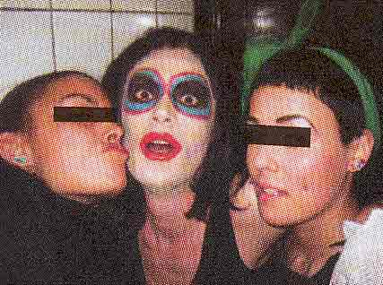

| Februar 2004 |

Farver striper... her er PUHA
| Nyt Magasin på gaden |
PUHA - Som er en udspringer fra Puta fra dunst for at øge forvirringen - er begyndt at samle venner og bekendte og perifærditeter og i ucensurens navn bede dem skrive, klippe og fotografere og aflevere til fotokopiering. På den måde kan PUHA sammen klipses og foldes, så man får idéen om et magasin, der kan skaffes i:
Galleri V1 i Absalongade,
WoodWood i Krystalgade,
Appendiks i Tullinsgade.
Reception på et eller andet tidspunkt i februar.
For mere info skriv til:
puhagyxi.dk
Print denne side